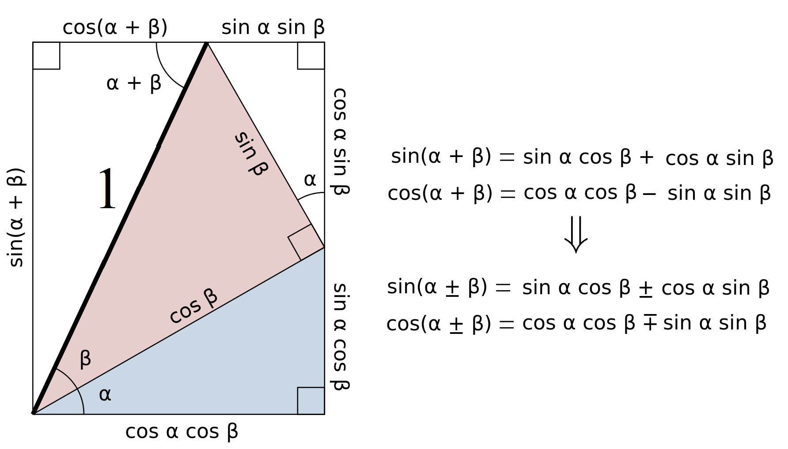

Trigonometry#
The Basics#
Trigonometry is the study of triangles, lengths, and angles. Typically, we use trigonometry to examine right-angled triangles, where Pythagoras’s theorem applies:
We can label the sides opposite and adjacent to angle \( \theta \) and define the three basic trigonometric functions:

If we look at Pythagoras’s theorem again:
which is a very useful relation between \( \sin \) and \( \cos \). We can also define reciprocal functions for each of the trigonometric functions:
There are some angles which produce special results:
It is also common to write angles in Radians instead of Degrees, and we can convert between them using:
Using radians is quite common in mathematics, so we will use them throughout from now on. We can extend these trigonometric definitions from triangles to circles, and plot graphs over the range \( 0 \leq \theta < 2 \pi \):
Notice that since \( \sin(\theta) < 0, \, \pi < \theta < 2\pi \) and \( \cos(\theta) < 0, \, \frac{\pi}{2} < \theta < \frac{3\pi}{2} \), the circle can be broken up into quadrants with different behaviors:
Using trigonometry, we can find some interesting identities. Start with a triangle and draw a right-angled bisector from apex \(B\) down to side \(b\):
Trigonometric Rules#
Sine Area Rule#
Since Area \(= \frac{1}{2}bh\), using trigonometry:
and hence for any triangle:
which we can extend to any two sides of a triangle and the angle between them:
Sine Rule#
Using trigonometry:
We could equally bisect the line \(a\) at right angles from apex \(A\), and find that:
which means for any triangle:
Cosine Rule#
Performing Pythagoras’s theorem on the sides opposite to \(h\):
Looking at the side \(b\), which is broken up into \(b_1, b_2\):
and now putting these together:
Using trigonometry on the side \(b_1\):
This reduces to Pythagoras’s theorem for \(A = \frac{\pi}{2}\), but holds true for any triangle. We can also write different versions based on the angles involved:
These are useful formulae for calculating a triangle’s angles when we know all the side lengths, OR to find a third side if we know one angle and two lengths of a triangle.
Trigonometric Identities#
Using our trigonometric definitions, we can start to develop more complicated identities. Two of the most useful are the compound angle identities for \( \sin(\theta) \) and \( \cos(\theta) \), which can be proven geometrically:

where we have used the odd function properties of \( \sin(\theta) \) and even function properties of \( \cos(\theta) \) in the final set of identities. Equally, for \( \tan(\theta) \), we find:
Double Angle Identities#
Using these identities, for the case of double angles:
where for these last two identities we have made use of the trigonometric version of Pythagoras’s theorem, \( \cos^2(\theta) + \sin^2(\theta) = 1 \). Likewise for \( \tan(\theta) \):
Inverse Trigonometric Functions#
As well as knowing the trigonometric functions and their reciprocal functions, it is possible to define their inverse functions. To ensure that we have 1-to-1 mappings, we need to restrict the domain of the functions before finding the inverse, which means there can be different co-domains for each function:
We can visualize all of these graphically:
We notice that for \( \tan(x),\, \arctan(x) \), the function asymptotes to positive/negative infinity, whereas \( \sin(x), \,\cos(x) \), etc., are all in closed intervals.
Hyperbolic Functions*#
Recall that there are both odd and even functions which satisfy:
We do also know functions which fit into neither of these categories, such as the exponential function \( f(x) = e^x \).
We can define the Hyperbolic functions:
From the definitions, we find the following useful relation:
Likewise, it is possible to construct reciprocal functions:
Which allow us to construct further useful relations: